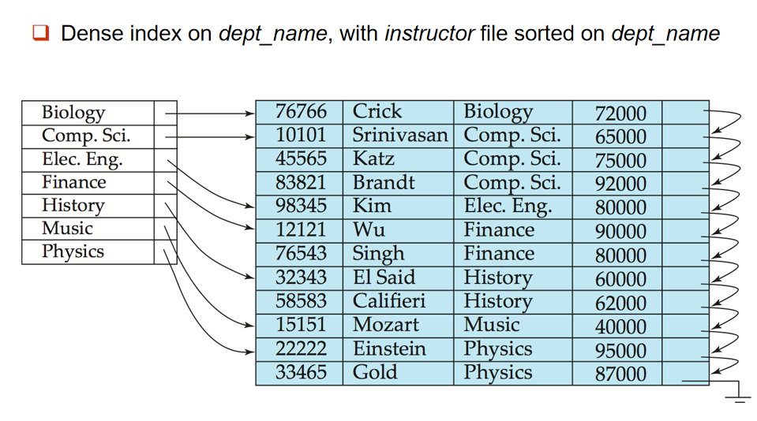

Lesson9
Indexing and Hashing
来了来了，大的要来了！
Basic Concepts
基本的索引方式：
- 顺序索引（Ordered Indices）：搜索键（索引条目）按排序顺序存储。
- 散列索引（Hash Indices）：搜索键（索引条目）通过散列函数均匀地分布到不同的“桶”（buckets）中。
高效支持的访问类型：
- 具有指定属性值的记录（例如：
WHERE Col = v）。 -
具有属性值落在指定范围内的记录（例如：
WHERE Col BETWEEN v1 AND v2）。- 哈希索引（Hash index）不适用于范围查询（例如：
BETWEEN查询条件），而顺序索引（Ordered index）适合此类查询。
- 哈希索引（Hash index）不适用于范围查询（例如：
索引的关键指标：
- 访问时间（Access Time）：
- 插入时间（Insertion Time）：
- 删除时间（Deletion Time）
- 空间开销（Space Overhead）
Ordered Indices
一些基本概念：
- 在顺序索引中，索引条目按搜索键值进行排序存储。
- 数据文件中的记录按搜索键进行排序存储。这个文件通常用于顺序查找和范围查找操作
-
主索引（Primary Index）：
- 主索引是与顺序排序数据文件的搜索键相对应的索引。换句话说，主索引的搜索键与数据文件本身的排序顺序相同。
- 主索引也称为聚集索引（Clustering Index），因为它与数据文件的物理顺序相一致。
- 主索引的搜索键通常是主键（Primary Key）
- 辅助索引（Secondary Index）：其搜索键指定的顺序与数据文件的顺序不同的索引。也称为非聚集索引（Non-clustering Index）。
-
两种顺序索引类型：
-
Dense index (稠密索引)
- Sparse index (稀疏索引)
Dense Index
稠密索引：每个搜索键值（即每个数据记录）都在索引文件中有一个对应的索引条目。这意味着索引文件包含了文件中所有记录的索引条目，每条记录都有一个指向其位置的指针。

上面举的例子都遍历了所有可能的值。
Sparse Index
稀疏索引：只包含一些搜索键值的索引条目，而不是所有数据记录的索引条目。
只包含部分值，这样Index空间就小了，但是速度慢也不适用于范围查询。
查找特定值的方法：先找到小于等于该值的最大索引值，然后从该值开始遍历。
良好的折中来了，看描述都像B+树。
- 稀疏索引：适用于顺序数据文件，具有较小的空间开销和较低的维护成本，但查询时可能需要更多的顺序扫描，适用于数据已排序的场景。
- 稠密索引：适用于顺序和非顺序数据文件，查询时定位精确，但其空间开销较大，插入和删除操作的维护成本也较高。
辅助索引：例如使用户号进行索引的表，实际要搜索的一般是账号余额之类的信息，即我们进行非主索引字段的查询。
Secondary Indices
辅助索引结构：
- 索引记录：对于每个搜索键值，建立对于对应值或值区间的索引记录
- 桶：每个索引记录指向一个桶，桶中包含了指向对应查询结果的指针
由于需要处理值范围，且每个查询结果都需要有指针指向，因此不使用稀疏索引。对于每个index entries，不能有重复值，但是实际的查询结果可能有多值(如700)，因此使用桶结构。
Multi-index
多重索引：解决在数据记录增多，索引文件过大/多，查询速度慢的问题。
不赖，感觉有B+的影子了。其思路就是通过给索引增加索引，形成一个多级的结构，这样类似不断二分递归的感觉，查询速度更快。
Index Update: Deletion
删除记录时，需要更新对应的索引条目。
-
对密集索引而言
- 若对应的索引条目的记录仅有需要删除的，那直接删除索引条目即可
- 若对应的索引条目的记录还有其他记录，则将索引条目中对应记录的指针删除
-
若要处理的是主索引，则：
- 若删除的是主索引的第一条记录，则需要更改第一条记录的指针走向
- 若不是第一条记录，则不做任何修改
- 对稀疏索引而言
-
如果删除的记录的搜索键值在索引中不存在，那么不需要对索引进行任何操作
-
如果存在
- 首先删除之
-
如果该索引条目并非唯一（即同一搜索键值有多个记录），则可以将该条索引记录替换为数据文件中下一个搜索键值的索引条目。
- 如果下一个已经是索引条目了，则删除现有的索引条目(本质就是啥也不干)
- 多级索引：删除记录时，需要从最底层开始逐级处理对应的索引条目：递归的处理方式。
插入记录其实同理。
-
单级索引
-
密集索引
- 没有该搜索键值，就给索引添加
-
有该搜索键值，就更新指针，不管是多指针还是单指针都总要添加的(
- 稀疏索引：稀疏索引只为每个数据块创建一个索引条目，每个条目代表该数据块的最小搜索键值。因此，插入新记录时，更新索引的方式与密集索引有所不同。
-
是最小值就将指针改为它，不然不做任何处理
- 甚至还有导致新数据块的生成的，那就分开再处理(新数据块的第一个记录的搜索键值作为 该数据块的搜索键值，并 将这个搜索键值插入到索引文件中，以便为新数据块创建索引条目 balabala)
-
-
多级索引：总之就是递归操作。
B+-Tree Index Files
来了来了来了来了来了来了我服了。
基本性质其实ads学过了，无所谓，再复习一遍不是因为忘光了。
- 平衡树：树高为\(O(logn)\)，其实插入删除查找的时间也都是\(O(logn)\)。
- 内部节点(非根且非叶)的子节点个数范围为\([⌈n/2⌉, n]\)
- 叶子节点的值数目在\([⌈(n-1)/2⌉, n-1]\)之间
- 根节点如果有子节点，则子节点数目在\([2, n]\)之间；如果是叶子(即仅一个节点)，值数量可为\([0, n-1]\)
基本每个节点的结构：
\(P_i\) are pointers to children (for non-leaf nodes) or pointers to records or buckets of records (for leaf nodes)
很好理解，看上面的图就看懂了。
通常，一个节点代表一个块。
search keys是in order的，即\(K_1 < ... < K_n\)
Only need bucket structure if search-key does not form a primary key.
非叶子节点：Fanout (扇出数) = the number of pointers in a node，也即子节点的数量。
对于\(1 < i < n\)，满足\(K_{i-1} < P_i < K_{i}\)。\(P_n\)的所有搜索键值大于前面的所有的值。
阐述一下B+树的观察结果(？)：
- 非叶节点的层次化稀疏索引
- 逻辑与物理存储的独立性
- 平衡树：高效的处理效率(包括查找插入删除)
查找操作：
上述的操作是在\(K\)是始终为递增的情况下进行的，如果\(K\)不是递增的，即仅能保证随着n增大不递减，我们要对上述过程进行一个修改，即重复处理相同键值）。
B+树中，其最大树高为\(log_{⌈n/2⌉}K\)，其中\(K\)为文件中搜索键值的数目，n为每个节点中索引项的数量。这个值也等于最多需要访问节点的数目。
都有点忘记怎么做了。概括一下，先找到对应的叶子节点，不满直接插；满了就分裂，然后处理父节点，父节点有变动就再递归。
最坏的情况是树高增1，就是连根节点也分裂了。
OK我去网上搜一搜教程，终于又理解了。
- take the n (search-key value, pointer) pairs (including the one being inserted) in sorted order. Place the first \(⌈n/2⌉\) in the original node, and the rest in a new node.疑似是错的，因为旧的节点应该更少才对。
- let the new node be p, and let k be the least key value in p. Insert (k,p) in the parent of the node being split.
- If the parent is full, split it and propagate the split further up.
注意在内部节点，所谓的中间值会上传到父节点，这是直接拿走而非像叶子节点的copy。
insert后上传的父节点是\(⌈n/2⌉\)，这里的n是